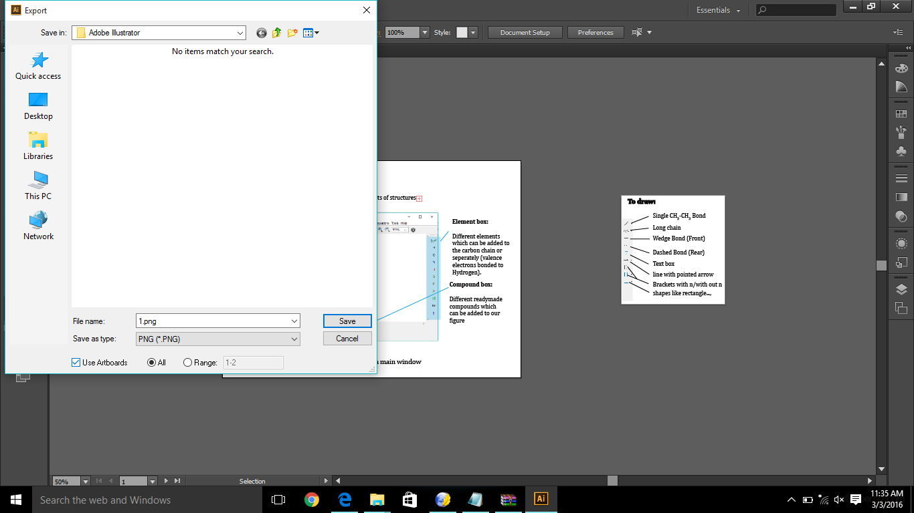

Adobe Illustrator
Adobe Illustrator
Topic: Adobe Illustrator basics & Tutorial
-
Adobe
Illustrator
is a
program which is used to make vector graphics with help different
drawing
tools.
-
To
start a new project press Ctrl+N, New
Document dialog appears.
-
In
the
dialog box, under
 size dropdown
menu select size, usually A4/A3 sizes are preferred.
size dropdown
menu select size, usually A4/A3 sizes are preferred.
-
In
Advanced menu, under Color format option RGB
is selected (preferred).
-
All
the
work is done on the Art board.
The
Toolbox, which is on the left side of the Art board consists of many
tools for
drawing. Some of the tools are:
- Selection
tool:
This tool is generally used for selecting the
shapes drawn and to
move them and for resizing.
This
tool can activated by pressing key V.
- Pen
Tool: This
tool is used for drawing various shapes like line,
curve…..etc., this tool can be
activated by pressing key P.
- Textbox
Tool: This
tool is used for making text boxes
to type text in them.
- Line
Tool:
This is used for drawing simple lines.
- Rectangle
Tool: This
tool is used for drawing simple rectangles. By
long-pressing the button a menu with options for
drawing Ellipse, Rounded
Rectangle, Polygon
appears. o
One
can draw a shape by selecting the option and
dragging the mouse pointer across the Art Board.
o
Using
the Shift
key, one can vary the attributes of a shape in a linear
fashion.
o
Using
the Alt key, one clone a shape by
dragging shape simultaneously with the Alt key
pressed.
o
One
can rotate the shape to any angle taking the
mouse pointer to the re-sizing points of the shape
until it turns into
this curved line with two arrows and rotate the shape by clicking left
mouse
button and moving the pointer.
Different
Tools:
There
are different tools in Adobe Illustrator, they are shown as below
One
can create as many artboards as they want, using Artboard tool, you
can make artboards the same as you can create rectangles. Look
at the screen shots given below.
Step 1: Open new
file. Select Artboard
tool.
Step 2: Drag the
pointer until you get the desired size.
Step 3: Now you will
get a new Artboard of desired shape.
Using
the above
tools mentioned, one can fill the shape with color (or no color), can
design
the border of the shape ....etc.,
To
add arrow
heads to a line
- Go
to window > select Stroke
option.
-
Now
a panel will be visible. Select option , the panel expands revealing the
options to add arrow heads to line.
-
One
the
increase the opacity of a color of a shape by setting percent in the Opacity present in toolbar.
-
One
vary the
attributes like its position, angle with
the x axis, height, width….
…etc.,
with
the help of Transform
option (which can be clearly seen below).
- One
can get the
reflection of a shape, by right clicking
on that shape and going to Transform
option and select Reflect, select
corresponding options.
- Similarly
on
can Rotate and Move using the same
method.
- One
can bring a shape above/below other
by
right clicking on the shape > go to
Arrange > select Bring Forward/Bring Backward.
- In
order to use
the desired color, get the HTML code of the color and double click on
the Fill
option and insert the Color in the box shown below.
- One
can
export the drawing to the desired format with the help of Export option in File
menu.
- If
one want to one want to make many figures in one file and export each
figure seperately follow the following steps:
- First
create as many ArtBoards as many Figures you want to draw, in the
workspace using Arboard Tool.
- Draw
the Figures you want to in different Artboards.
- While
exporting the images to PNG or desired format select the option Use Artboards which
is present below the Save
as type Box.
- Finally click on Save button, you
find the different figures saved with the names A-01, A-02, ......, A-n
(where n represents
Artboard number).
Example:
1. I made two diagrams in
one file using different Artboards (as you see below):
2. Next, inorder to
export them seperately into two files, select 'Use Artboards' option.

3. Then you can see two
PNG files generated from one Adobe Illustrator file.
In
order to trace/draw a cartoon/shape best tool to use is Pen
tool.
- First
start with a point (this can be created by clicking left mouse button)
and make
another point at the required distance and drag the cursor in different
directions
until desired shape is obtained.
- Next
Anchor the point by pressing on
the
point and proceed to the next point.
- Like
this
make desired number points and finally join the last two points to make
a
closed figure.
v
With
the help of this one can make any shapes closed or open or any diagram
with the
help of it.
v
For
Example, we have to make the diagram
of Stick man with the help pen tool, and other tools.
-
First
place the downloaded picture in the ArtBoard, with the help of Place option in File
menu.
-
Divide
the diagram into different number of parts.
-
Change
the color of the pen tool.
-
Start
tracing the different parts of the diagram on it.
-
Start
filling the different parts of diagram.
-
Bring
the required components of diagram to surface/send them backward by right clicking on the shape > go to
Arrange > select Bring Forward/Bring Backward.
-
Finally
by resizing to the desired shape and export it to desired format.
In
detail:
o
In
the example of Stick man, first divide it
into different parts i.e... Body, Heart, Hands, Legs … etc..,
o
Change
the color of the pen other than the border color of the picture.
o
Then
trace the parts with help of pen tool (as given in previous
instructions).
o
Bring
the required parts to front and backward
i.e. Eyes should in the front, Tail & Hair should be at the
back …etc.,
with Arrange option. Right one we
don't such things .
o
Fill
them with desired colors, do the detailing.
o
Set
the height and width of it with Transform
option.
o
Set
the size of ArtBoard using ArtBoard tool.
o
Export
it to the desired format using Export
option.
Above steps with pictures:
With
this we can design
anything with the help of Adobe Illustrator.
The more you practice the
more you excel.
Summary:
- Open a new file.
- Name the file same as the figure
number. (For ex: Fig.1,
filename will be 1.ai.)
- Draw the diagram using the tools
described above.
- Mention the figure number in every
diagram. Suppose if any diagram has two parts (namely Fig.1(a),
Fig.1(b)), then use different artboards for different figures in the
same illustrator file (1.ai).
- Draw a nice figure (clear,
interactive). For resolution refer to content layout.
- Then export the image to PNG format.
- While exporting, click on use
artboard option always. It will export all the images made in different
artboard into different PNG files.
- Make sure your adobe
illustrator files should be in Adobe Illustrator folder and all PNG
files in PNG folder.
Credits: Upendra Sai Teja
Copyright ThinkMerit. All rights
reserved.